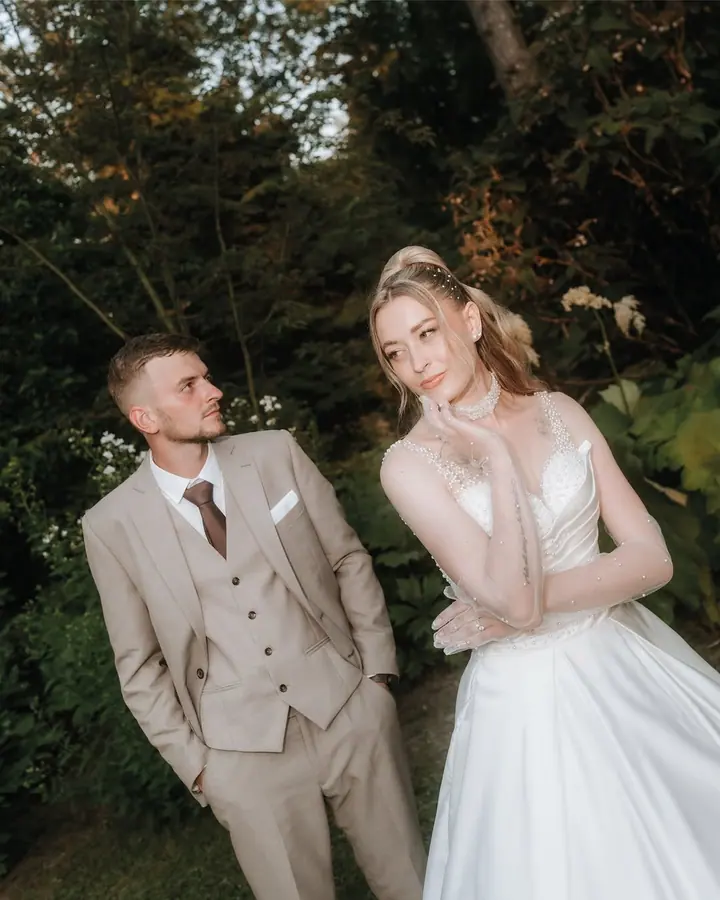
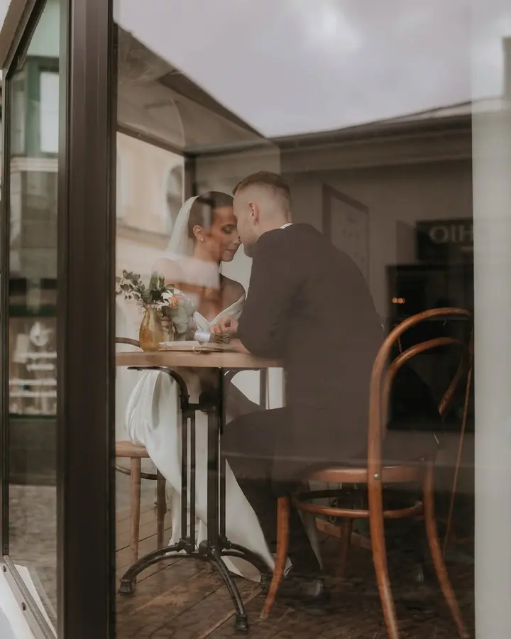
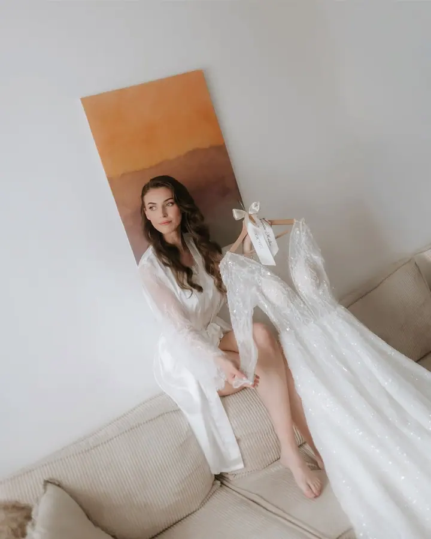
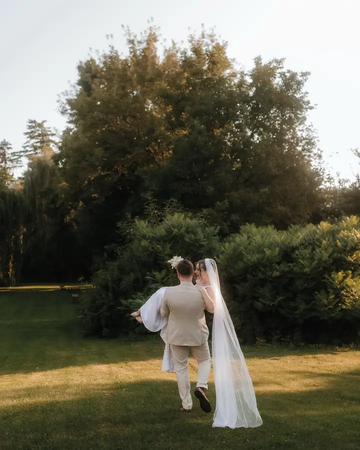

Svatby
Celý svatební den od příprav nevěsty přes obřad až po večerní procházku ve dvou. Každá svatba je jiná, a tak ji i fotím.

Jmenuji se Miroslava Marťáková a fotím svatby, páry i rodiny v Žilině a okolí. Nejvíc mě baví vyprávět vaše příběhy tak, jak opravdu plynou, od ranních příprav až po več…
Rezervovat termínFotím vaše příběhy. Tak to mám napsané v profilu a tak to i myslím. Nezajímají mě strojené pózy, ale to, co se mezi vámi skutečně děje: pohled přes stůl v kavárně, smích během obřadu, chvíle, kdy na fotografa úplně zapomenete.


Mým domovem je Žilina, ale nejraději mám, když každá svatba vypadá jinak. Jednou je to zahrada zalitá večerním sluncem, jindy městská kavárna nebo louka na kraji lesa. Ráda pracuji s přirozeným světlem a teplými, tlumenými barvami.
Když zrovna nefotím svatby, cestuji. Z Azor, Algarve, Flores, Malediv i mexického Holboxu si vozím spoustu fotek a inspirace, kterou pak přenáším do focení s vámi.
Co fotím
Celý svatební den od příprav nevěsty přes obřad až po večerní procházku ve dvou. Každá svatba je jiná, a tak ji i fotím.
Společné focení pro dva, ať už v ulicích města, v přírodě nebo na pláži. Uvolněná procházka, při které se nemusíte nic učit.
Rodinné focení v klidu a bez spěchu. Fotky, ke kterým se budete vracet, až děti vyrostou.
Postup
Pošlete mi e-mail s datem a místem vaší svatby nebo focení. Ozvu se vám a domluvíme se, jestli je termín volný.
Probereme, jak si svůj den představujete, co je pro vás důležité a jaké místo by se k vám hodilo.
Jsem s vámi nenápadně a v klidu. Vy si užíváte den a já fotím to, co se opravdu děje.
Fotky pečlivě vyberu a upravím do jednotného stylu a pošlu vám je v online galerii, ze které je snadno sdílíte s blízkými.
Otázky
Žilina je můj domov, ale ráda se za vámi vydám i jinam. Napište mi, kde se budete brát, a domluvíme se.
Vůbec ne. Většinu času vás jen nechám být spolu a občas jemně nasměruji. Nejhezčí fotky vznikají, když na foťák zapomenete.
Napište mi na info@mkphotography.sk. Jakmile si termín potvrdíme, je jen váš.
Ano. Kromě svateb fotím páry na společném rande i rodinky, ideálně venku a v přirozeném světle.
